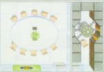

| Home | New | Quests | Tiles | Gallery | FAQ | Furniture | Heroes | Monsters | Rules | Spells | Paper Minis | Icons | Finding HQ | Links |
|  Space Station 2 (71k) copyright 1999 by Dany St Pierre. |
Space Station 3 (48k) copyright 1999 by Dany St Pierre. |
Space Station 4 (140k) copyright 1999 by Dany St Pierre. |
Space Station 5 (26k) copyright 1999 by Dany St Pierre. |
Space Station 6 (22k) copyright 1999 by Dany St Pierre. |
Space Station 7 (28k) copyright 1999 by Dany St Pierre. |
Space Station 8 (114) copyright 1999 by Dany St Pierre. |
Space Station 9 (68k) copyright 1999 by Dany St Pierre. |